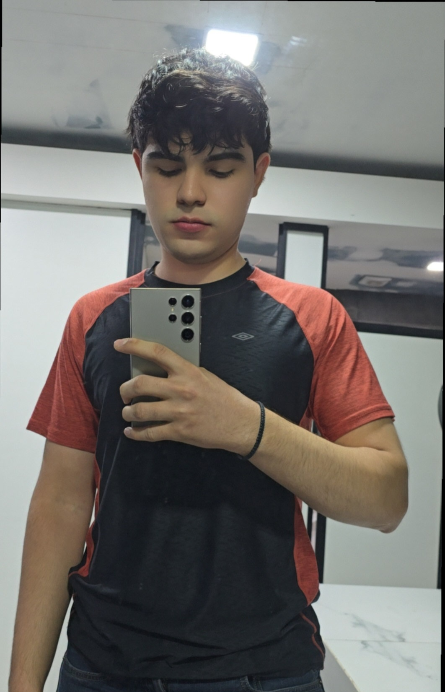

Hola, soy Daniel Felix
GRUPO: 602
Hola, soy Daniel, soy de sinaloa, edad 19, mi pasion es entrenar, ver videos y jugar videojuegos, signo escorpio

Mis Peliculas favoritas son:
- El padrino (The godfather)
- 12 hombres en pugna
- Batman
- Sueño de fuga
- El padrino Part 2
Top 5 comidas
- Tostadas de carne deshebrada
- Bistec
- Hamburguesas
- Tacos carne asada
- Enchiladas